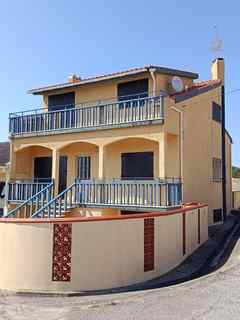
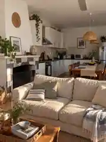
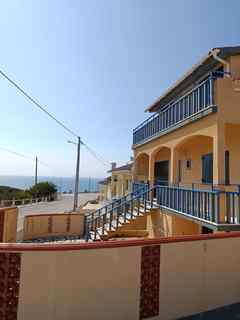

02 · Photography
Property photography & interior concept





A substantial coastal property in a small Atlantic settlement, internally arranged as three autonomous residential areas.
Internally organised as two T3 configurations and one T2 configuration. Each has its own kitchen and fireplace.


A compact Atlantic settlement on Portugal's Silver Coast, with the ocean immediately beyond the residential streets.
Interior concept imagery is illustrative and does not represent the property's current interior condition.
The three residences are an internal configuration of the house and are not individually registered as separate units. The property remains registered as one single unit.
Any future separate registration, condominiumisation, licensing or change of use is subject to independent legal, planning and technical verification and applicable approvals.
Further documentation and viewing information available on request.
€600,000
Request information